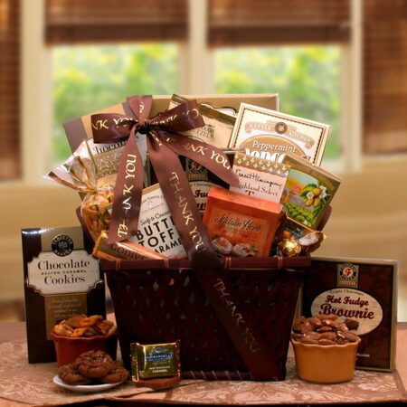
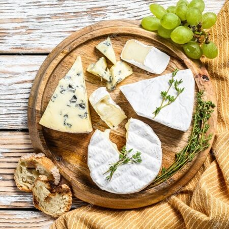
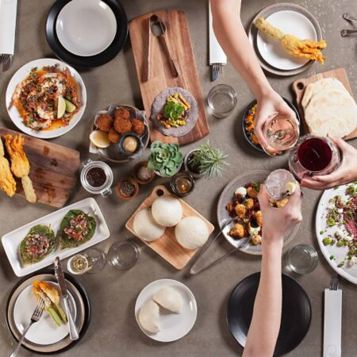
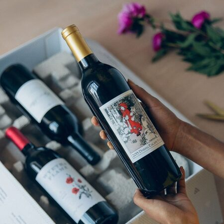
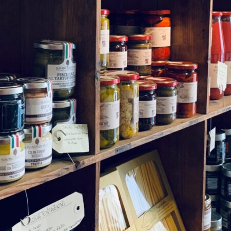
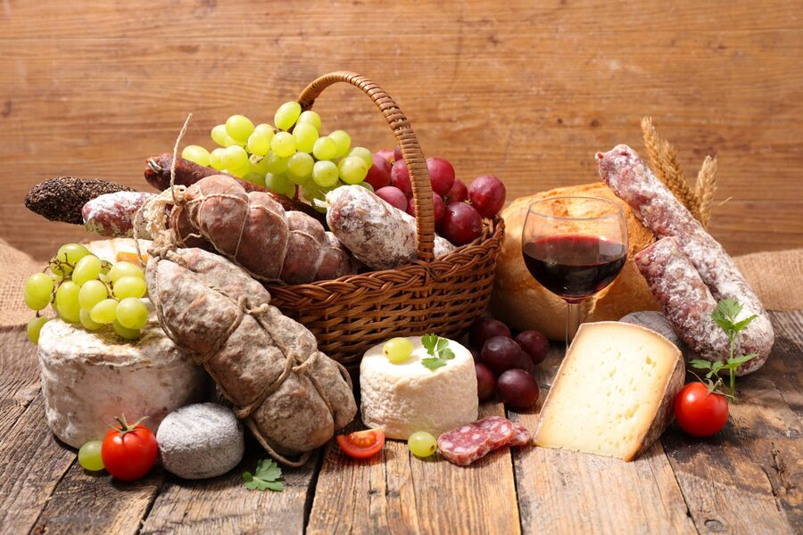
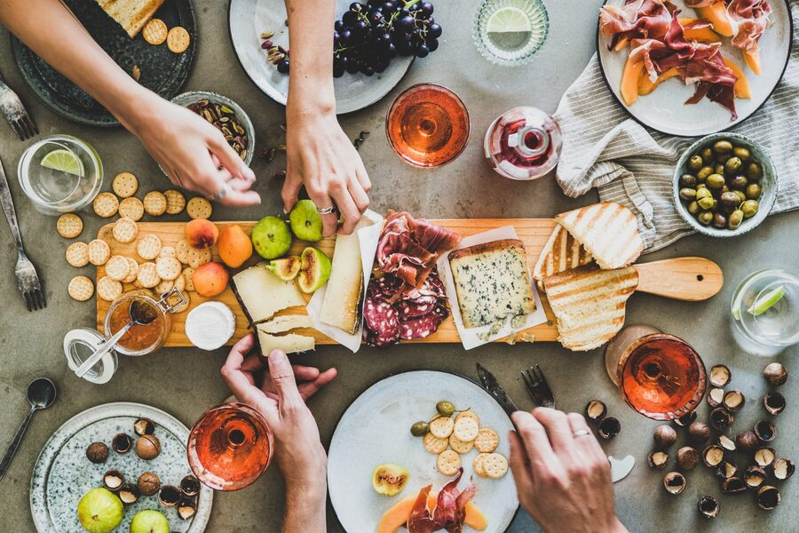
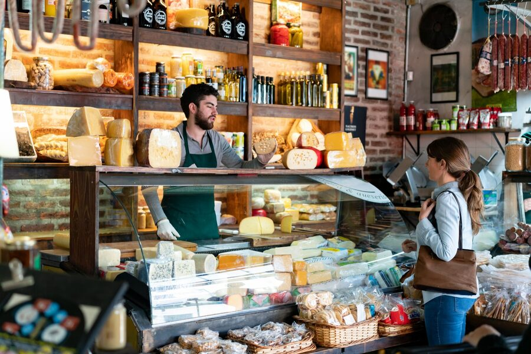

Nuestros productos





Productos de calidad seleccionados: quesos y embutidos nacionales e importados, dips y chips para piqueo, bocaditos, postres, helados artesanales, panes de masa madre, pastas y vinos europeos.
Canastas listas & personalizadas

Canastas gourmet para toda ocasión. Escoge de nuestra selección, modifícala a tu gusto o pide una personalizada para que sea el regalo ideal. Canastas corporativas a pedido.
Tablas de quesos importados & nacionales

Tablas de piqueo con productos de calidad. Elige entre nuestras opciones o pide una a tu medida.
Nosotros

Somos un negocio familiar con 7 años acompañando a clientes que vuelven una y otra vez. Cuidamos la atención y la calidad de cada producto: cuando compras en Punto Gourmet, sales con una sonrisa.
Visítanos
Calle Simón Salguero 507, Santiago de Surco, Lima, Perú
Horario
- Lunes10:00 AM — 7:00 PM
- Martes10:00 AM — 7:00 PM
- Miércoles10:00 AM — 7:00 PM
- Jueves10:00 AM — 7:00 PM
- Viernes10:00 AM — 7:00 PM
- Sábado10:00 AM — 7:00 PM
Horario: Lunes a Sábado de 10:00 AM a 7:00 PM
Delivery el mismo día a distritos aledaños según disponibilidad.
¿Listo para armar tu pedido?
Pedir por WhatsApp